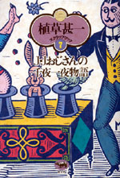
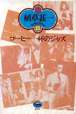

|
|
エッセイ | ||||||
極西文学論 |
|||||||
| 仲俣暁生 | |||||||
| 四六判 240頁 | |||||||
| 定価1680円（1600円） | |||||||
| 4-7949-6645-8 C0095 | |||||||
| 〈日本は極東ではなく「極西」だ〉。ポスト冷戦、ポストモダン、コソヴォ/イラクなど戦争の時代、グローバリゼーションの時代の次にくるものはなにか。舞城王太郎、吉田修一、阿部和重ら新世代の作家たちと、村上春樹をつなぐ軸から見えてくるものは？現代作家の様々な作品を読み解きながら、日本と日本文学の現在を考える文学エッセイ。 | |||||||
| 民俗学・エッセイ | |
| 渚の思想 | |
| 谷川健一 | |
| 四六判 240頁 | |
| 定価 2205円（本体2100円） | |
| 4-7949-6639-3 C0095 | |
| 日本人の意識の根元にある「常世」（とこよ）を考える。それは死者の国であると同時に、日本列島に黒潮に乗ってやってきた祖先たちの記憶であり、現世とつながっているあの世である。渚は常世への入口、常世と現世の境目なのだ。沖縄・奄美の文化、浜の暮らし、海の祭りなどから、海をめぐる独自の民俗学を積み上げてきた著者の原点を伝える一冊。 |
| メディア・本 | |||||||
| 「読者」の誕生 活字文化はどのようにして定着したか |
|||||||
| 香内三郎 | |||||||
| A5判 528頁 | |||||||
| 定価4410円（本体4200円） | |||||||
| 4-7949-6640-7 C0036 | |||||||
| 1450年頃、グーテンベルクが活版印刷術を発明して以来、ヨーロッパ中で本が大量に印刷されるようになるが、すぐに本が読まれるようになったわけではない。今日私たちがそうであるような、近代的な「読者」はいつごろ、どのようにして誕生したか。かつて誰も問うたことのない、活字文化の歴史上最大の謎を解きあかした、碩学の大著。 | |||||||
| 科学・エッセイ | |||||||
| 考えてみれば不思議なこと | |||||||
| 池内了 | |||||||
| 四六判 352頁 | |||||||
| 定価2310円（本体2200円） | |||||||
| 4-7949-6649-0 C0040 | |||||||
| 宝くじに当たる確率は隕石に当たるよりも小さい？ 地震の前に動物たちが騒ぎだすのはなぜ？……この世界は、ふだんは気にしてないが、考えてみれば不思議なことにあふれている。専門である宇宙の話はもちろん、生物学や化学や数学の領域まで、身の回りの科学を明快に解きあかす。一読、どんな科学嫌いも科学の面白さに目覚めること受け合い。 | |||||||
| 住まい | |||||||
| ゲストハウスに住もう！ TOKYO非定住生活 |
|||||||
| 今一生 | |||||||
| 四六判 208頁 | |||||||
| 定価1680円（1600円） | |||||||
| 4-7949-6647-4 C0036 | |||||||
| 敷金・礼金・保証人不要で入退居も簡単。隣人との共同生活気分も味わえる。これが首都圏で急増中のゲストハウスだ。資金は少ないけど自活したい。夢を実現したい。家族の暴力から逃げたい……。居場所を求め一歩踏み出した住人たちはどんな生活をし、何を見出しているのか？住人インタビュー、業者座談会、物件紹介、利用心得を網羅した新共同生活虎の巻。 | |||||||
| 児童文学・読書案内 | |||||||
| 永遠の少年少女 アンデルセンからハリー・ポッターまで |
|||||||
| アリソン･ルーリー 麻生九美訳 | |||||||
| 四六判 320頁 | |||||||
| 定価2310円（本体2200円） | |||||||
| 4-7949-6648-2 C0098 | |||||||
| すぐれた児童文学作家は、大人になっても子どもの心をもちつづけている。作家自身が永遠の少年少女なのだ。世界中で愛されているアンデルセン、『オズの魔法使い』『ムーミン』などの名作から現代のベストセラー『ハリー･ポッター』まで、作家の人生と作品との興味つきない関係を明かす。子どもの本の魅力と不思議を綴る最高の児童文学ガイド。 | |||||||
| ミステリ | |||||||
| 晶文社ミステリ プリーストリー氏の問題 |
|||||||
| A・B・コックス 小林晋訳 | |||||||
| 四六判 360頁 | |||||||
| 定価2310円（本体2200円） | |||||||
| 4-7949-2744-4 C0397 | |||||||
「君はカタツムリ野郎だ！」と友人から評されるほど、活気のない人生を送っていたプリーストリー氏は、ある夜、見知らぬ美女に助けを求められ、いざ冒険に乗り出したまでは良かったが、事態は予想外の方向に発展、殺人犯として件の美女と手錠でつながれたまま逃げまわるはめに……。A・バークリーが本名で発表した傑作スクリューボール・コメディ。 |
|||||||
| コミック | |||||||
| 無 FOR SALE | |||||||
| 小田島等 | |||||||
| A5判 192頁 | |||||||
| 定価1680円（1600円） | |||||||
| 4-7949-2022-9 C0079 | |||||||
未来都市にある〈無を売る会社〉。そこに就職した男が、お金で買える〈無〉を売り歩くという珍話「無 FOR SALE」。70年代ロードムービーさながら、車で疾走する男の空虚を描く「残像」、ほか5作。“サニーデイ・サービス”など、人気ミュージシャンのCDジャケット・デザイナーが放つ、新時代の奇想コミックス。（解説：曽我部恵一） |
|||||||
 |
エッセイ | ||||||
| 植草甚一スクラップ・ブック7 第4回配本 J・Jおじさんの千夜一夜物語 |
|||||||
| 植草甚一 | |||||||
| 四六判 224頁 | |||||||
| 定価1470円（本体1400円） | |||||||
| 4-7949-2567-0 C0398 | |||||||
| スマートな詐欺師、盲目のトランぺッター、超能力をもつ透視者たちの伝説、奇妙な味のショート・ショートや公衆便所百科など、甚一おじさんが、世界中の本や雑誌から拾いあつめてきた、一読三嘆、たのしく、美しく、奇想天外な物語集。ユニークな挿絵を随所に配した魔法のおもちゃ箱。（解説・矢川澄子） | |||||||
| ミステリ | |||||||
| 植草甚一スクラップ・ブック8 第4回配本 江戸川乱歩と私 |
|||||||
| 植草甚一 | |||||||
| 四六判 248頁 | |||||||
| 定価1470円（本体1400円） | |||||||
| 4-7949-2568-9 C0395 | |||||||
| 「乱歩さん」と話しかけると、「うん、なんだい」と気軽に答えてくれた、懐かしき巨人の思い出にはじまり、メグレ警部や007にいたる、内外のミステリーに関する読みごたえのあるエッセイや研究を集成。読んで気に入った本の話をするときは、実にうれしそうに顔がくずれる根っからの推理小説好き、J・J氏のミステリー論集。（解説・都筑道夫） | |||||||
 |
ジャズ | ||||||
| 植草甚一スクラップ・ブック23 第4回配本 コーヒー一杯のジャズ |
|||||||
| 植草甚一 | |||||||
| 四六判 260頁 | |||||||
| 定価1470円（本体1400円） | |||||||
| 4-7949-2583-2 C0373 | |||||||
| 「街の中を歩きながら、ああ、きょうは古本をだいぶ買ったなと思うと、うちへ帰るまえにコーヒーが飲みたくなるものだ」。ジャズ喫茶でコーヒーをゆっくり飲みながら、買った本をパラパラとめくる。オーネット・コールマン、チャーリー・ミンガス、セロニアス・モンク……モダン・ジャズってなんとすばらしいものだろう。（解説・高平哲郎） | |||||||